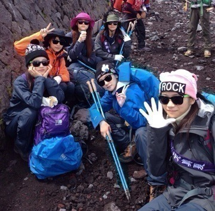
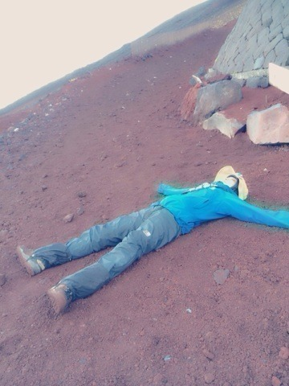

| 2014/10 06 Mon | NARUTO |
NARUTO。。。
えっっ。。。
Yahoo！トップみたら
えっ⁈
ジャンプ読みながらもうよくわからない精神状態。
サスケ。。。
君って奴は。。。
ナルト頼むっ！！
って言ってる場合じゃねー！！！
えっ⁈
えっ⁈⁈
11月10日こないでー(´；Д；｀)
あ。涙。
そして乃木どこ見ましたか〜ヽ(・∀・)ノ
１０枚目シングルのヒット祈願は富士登山でしたっ！
最初はこの体力で富士山登れる自信ないって不安で自然と涙が体から溢れていました笑
でもっ！
いくちゃん、まっちゅん、れいか、まなつ、みなみ、みおな、いこまで最後は太陽を味方につけ、青空を呼び寄せる事が出来ました〜ヽ(・∀・)ノ
そして登山が好きになりました

来年も絶対登りたい！！
富士登山素晴らしい⭐︎
富士山はずっとヒットの事、沢山の方に乃木坂46が広まって行きます様にってお願いしながら登りました！！
日本一空に近い、神様に近い所でお願いしたから叶うよね⁈

何故サングラスかって⁈
日差しがまぶしいからさ。

ついに富士山と一体化した生駒ちゃん
富士山頂からの青空。
10枚目。
勝負のシングル！
よろしくお願いします！
へばなっ☆彡
コメント(794)
2014/10/06 17:36